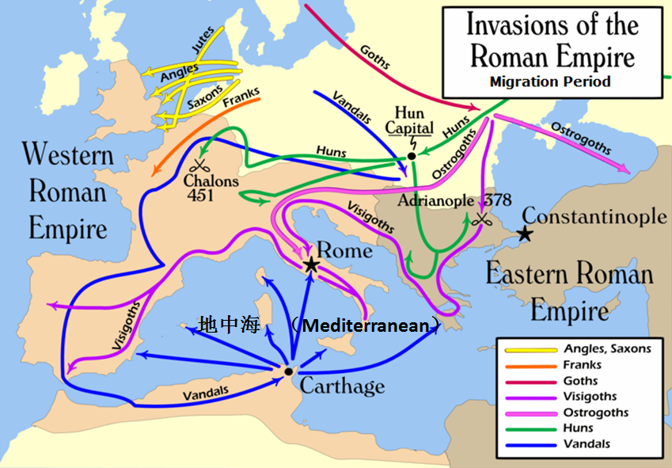

返回主页
日耳曼人大迁徙（蛮族入侵）

据说，维京（Viking）海盗也很厉害。
The Vikings a Very Short Introduction, Richards J.D.
蓝色海洋文明 VS. 黄色大陆文明
美国领导世界
“优等民族”考
《德国简史教程》
《德语国家国情》
《瑞士简史教程》
《德语简史》
普鲁士（Prussia）地图
以色列概况
魔戒的“大一统”铭文（英德）
“日耳曼（German）人大迁徙”其实是入侵罗马帝国的行动，被称为“野蛮人入侵”。现今的日耳曼人已经是有钱有势一族了。
德语名言：激励奋斗（5）
德语名言：激励奋斗（6）
The Migration Period, also known as the period of the Barbarian Invasions or of the Volkerwanderung ("migration of peoples"), was a period of intensified human migration in Europe from about 400 to 800 AD（公元）. Historians consider it to be the transition from Late Antiquity to the Early Middle Ages. This period was marked by profound changes both within the Roman Empire and beyond its "barbarian frontier". The migrants who came first were Germanic tribes such as the Goths, Vandals, Angles, Saxons, Lombards, Suebi, Frisii and Franks; they were later pushed westwards by the Huns, Avars, Slavs, Bulgars and Alans. Later migrations (such as the Arab conquest and Viking, Normans, Magyar, Moorish, Turkic, and Mongol invasions) also had significant effects (especially in North Africa, the Iberian peninsula, Anatolia and Central and Eastern Europe); however, they are outside the scope of the Migration Period.
挑战原文：但泽（Danzig）
《德语简史》：在日耳曼人西南迁徙的时候，原来居住在东北欧的斯拉夫也跟着往富饶舒适的欧洲西南部迁徙。另一方面，这种大范围迁徙也受到北亚更为野蛮强悍的游牧民族（匈奴、突厥、蒙古）的驱赶。那时候人口稀少，哪儿都可以安家。不存在 Ants 或 Locust的问题。到10世纪，日耳曼人口增长生产力发展并且组织得更好，他们又向东进攻已被斯拉夫人占据的土地，据说那里是日耳曼人的发源地。你可以认为这是回归（类似 Israel），或者是殖民（Colony）。强时弱肉适者生存
印度也有移民迁出到欧洲的，比如吉普赛人、波希米亚人和弗拉门戈人。
汉匈奴（Hun）唐突厥（Turk）宋蒙古（Mongol）。Haushofer 从中发展出Geopolitik Diplomacy，但败给Mahan和Mackinder。
歌曲：《国际歌》（Die Internationale）
“He who controls the past controls the future. He who controls the present controls the past.”
George Orwell, 1984
version:1.0; jobnet@188.com © retter2012.com